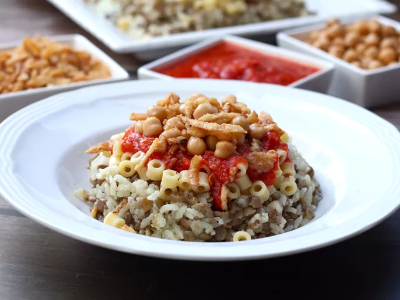

Koshary

Description
Koshary is pretty much Egypt's staple street food. You can find anything from a 2-story koshary restaurant to a man with
a cart on the side of the street. It has no meat, but even the biggest of carnivores don't miss it.
Ingredients
- 1 tablespoon olive oil
- 1 yellow onion, minced
- 1 cloves garlic, minced
- 1 tablespoon butter
Steps
- Combine chickpeas, vinegar, coriander, cayenne pepper, and cumin in a resealable bag or container with a tight-fitting
lid. Store in refrigerator while prepping remainder of dish, shaking occasionally.
- Bring a pot of lightly salted water to a rolling boil. Cook pasta in the boiling water until cooked through yet firm to
the bite, about 8 minutes; drain and set aside.
- Combine rice with enough cold water to cover; allow to soak for 20 minutes. Drain.
Home